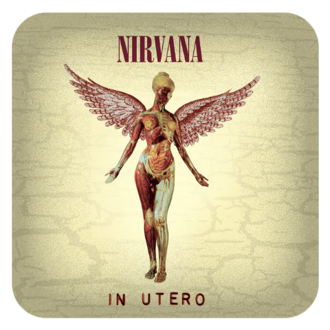

At the forefront of 1990’s grunge rock was Nirvana, a young, fresh band from Seattle consisting of frontman Kurt Cobain, bassist Krist Novoselic, and drummer Aaron Burckhard. After their first three years landing small gigs in Seattle and releasing their obscure debut album, Bleach, Nirvana quickly shot to fame following the release of their second studio album, titled Nevermind. The iconic trio of Cobain, Novoselic, and new drummer Dave Grohl soon became the face of rebellious, headbanging grunge rock throughout the 90s, and their legacy prevailed long after the death of Cobain in 1994.
I n U t e r o
In Utero Tour
01.08.94
Seattle Center Arena
Seattle, WA